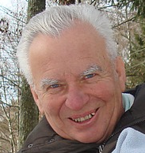
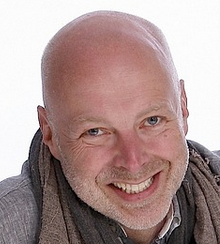

Qui sommes-nous ?
Créée en 2009 dans l'objectif d'aider les carrossiers à enjamber la marche du tout numérique, DigiCarross est une figure emblématique de la transformation digitale de ce domaine d'activité. DigiCarross propose de nombreux services innovants comme le CdaaS (Carrosserie digitale as a Service). Ce dernier permet à un garage spécialisé dans la carrosserie d'avoir tous les atouts du numérique dans sa boîte à outils !
DigiCarross est actuellement à la recherche d'un chef de projet expérimenté, n'hésitez pas à prendre contact avec un de nos associés via les adresses mails présentes ci-dessus ou les comptes LinkedIn de nos collaborateurs.

Eugène Lacrymo
Eugène est le créateur de l'entreprise "DigiCarross".
Carrossier de formation, Eugène a décidé de se tourner vers l'Informatique au début du 21ème siècle.
Ne pouvons se détacher de son premier métier, Eugène créa DigiCarross dans le but de fournir aux carrossiers des solutions informatiques fiables et pertinentes.
✉ e.lacrymo@digicarross.fr
Samantha Damien
Samantha est la responsable en ressources humaines de la société. Elle sera la première à vous contacter si vous souhaitez nous rejoindre !
✉ s.damien@digicarross.fr

Bob Lefebvre
Bob est le secrétaire de la société DigiCarross. Il est le point de contacts à privilégier pour vos différentes requêtes. Bob gère le standard téléphonique de l'entreprise, vous arriverez donc facilement à le joindre.
Il sera vous accompagner au mieux dans votre expérience digitale !
✉ b.lefebvre@digicarross.fr
Patrick Dubois
Fan de l'Open Source, Patrick est l'expert DevOps de DigiCarross. En effet, une digitalisation pertinente nécessite un accompagnement spécialisé. Ainsi, Patrcik accompagne le client tout au long de la réalisation et développera quasiment en temps réel les nouvelles attentes du client.
Patrick dispose également de compétences en intelligence artificielle, pour les carrossiers désirant la pointe de la technologie !
✉ p.dubois@digicarross.fr

Vanessa Lambert
Dévelopeuse pour DigiCarross depuis plus de cinq années, Vanessa sait comprendre les besoins de nos clients si particuliers.
Via sa gestion de projet Agile, Vanessa vous accompagnera tout au long du projet afin de concrétiser vos ambitions d'un garage totalement digitale.
✉ v.lambert@digicarross.fr